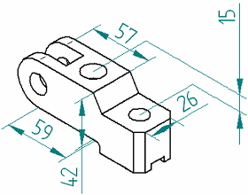
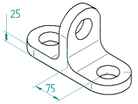
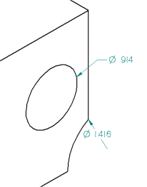
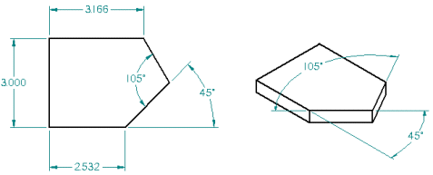

3D pictorial drawing view dimensions
You can add 3D dimensions to a pictorial drawing view. On a drawing, 3D dimensions use the associative model to determine true distance, rather than the space on a 2D drawing. You can place a linear, radial, or angular Smart Dimension as a 3D dimension.
To add dimensions and annotations to 3D models, use the commands on the PMI tab on the ribbon. See the Help book, Product Manufacturing Information (PMI).

Linear 3D dimensions

Radial 3D dimensions

For radial 3D dimensions, if the dimension is on the inside of the 3D circle or arc, then the tail of the dimension is tied to the center of the 3D circle or arc. If the dimension is on the outside of the 3D circle or arc, then the dimension line is aligned with the center of the 3D circle or arc.
Angular 3D dimensions

For angular 3D dimensions, the model planes and adjacent face planes of the lines are valid dimension planes.
Workflow
You place a 3D dimension on a pictorial drawing view using the same workflow as when you place a 2D dimension. However, if the drawing view is out of date, you must use the Update View command to make it up to date with the model before you can dimension it.
Dimensions in 3D are created relative to a dimension plane. In a drawing, this is determined by the element you select. You can change the plane at any time during dimension placement. In a drawing, change the dimension plane with the N and B keys.
Drawing View Properties dialog box
The Create 3D Dimensions In Pictorial Views check box on the General page of the Drawing View Properties dialog box controls whether 3D dimensions are placed. By default, 3D dimensions are enabled for pictorial views.
Placement guidelines on drawings
Because 3D dimensions measure actual model space, it is important to consider the perspective of the view when evaluating apparent conflicts between dimensions. For example, a cutout that appears circular in a pictorial view may actually be elliptical, and have proximate radial dimensions with different values. Moreover, when you look at a drawing, there is no way to distinguish at a glance between a 2D dimension and a 3D dimension (unless the 3D dimension has a placement that is impossible for 2D dimensions).
Therefore, it is possible to create a drawing with both 2D and 3D dimensions on which dimension values seem to conflict, because the 2D dimension is measuring drawing sheet space and the 3D dimension is measuring actual model space. Keep this in mind and use your knowledge about your situation and workflow to avoid creating potentially confusing drawings.